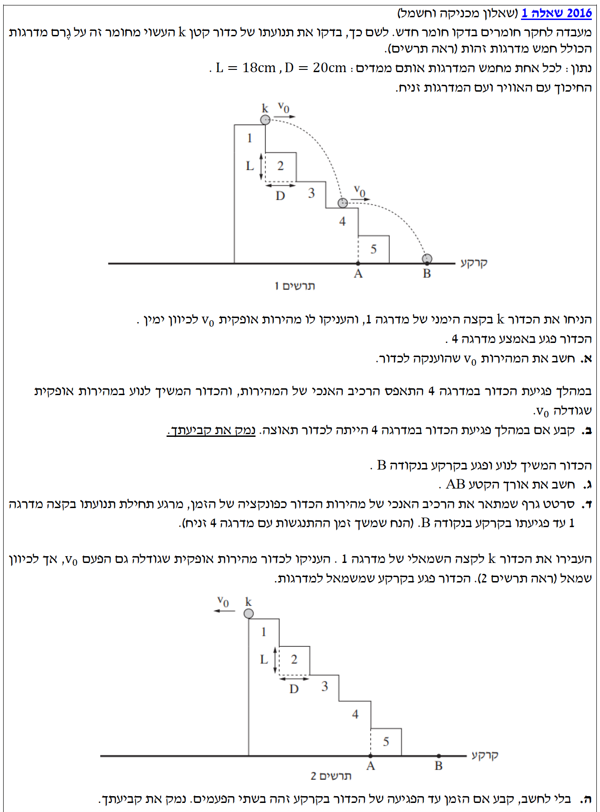
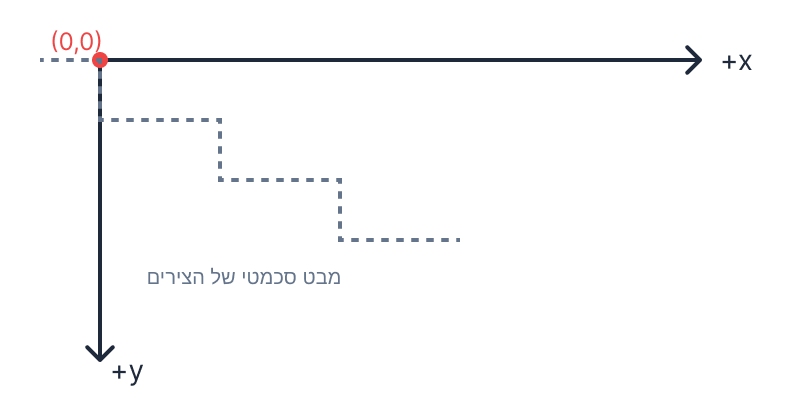
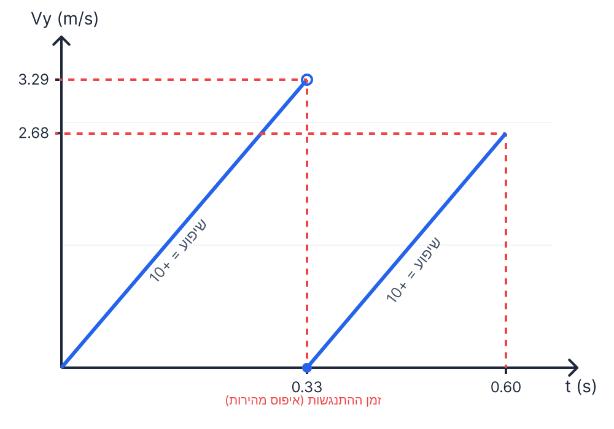

קינמטיקה וזריקה אופקית מדרגות

לפני שניגש לסעיפים, נגדיר את מערכת הצירים ונתרגם את הנתונים ליחידות תקניות (MKS):

הכדור נזרק מראשית הצירים $(x_0=0, y_0=0)$ במהירות אופקית $v_0$ (כלומר המהירות ההתחלתית בציר $y$ היא $v_{0y}=0$).
הכדור פוגע באמצע מדרגה 4. נחשב את נקודת הפגיעה בהתבסס על המיפוי שלנו:
את גודל המהירות האופקית ההתחלתית, $v_0$.
נתחיל ממשוואת ציר ה-$y$ כדי למצוא את זמן המעוף $t$ עד רגע הפגיעה. נציב את הנתונים שלנו ($y_0=0, v_{0y}=0, a_y=10, y_f=0.54$):
$$0.54 = 0 + 0\cdot t + \frac{1}{2}\cdot 10\cdot t^2$$ $$0.54 = 5t^2$$ $$t^2 = 0.108 \implies t \approx 0.3286 \text{ s}$$כעת, נשתמש בזמן שמצאנו במשוואת ציר ה-$x$ כדי למצוא את $v_0$. נציב את הנתונים ($x_0=0, x_f=0.50, t \approx 0.3286$):
$$0.50 = 0 + v_0 \cdot 0.3286$$ $$v_0 = \frac{0.50}{0.3286} \approx 1.521 \text{ m/s}$$במהלך הפגיעה במדרגה 4, הרכיב האנכי של המהירות התאפס ($v_y = 0$), אך הכדור המשיך לנוע אופקית במהירות $v_0$. משמעות הדבר היא שלפני הפגיעה הייתה לכדור מהירות אנכית (אותה צבר במהלך הנפילה), ומיד לאחריה המהירות האנכית הפכה לאפס.
לקבוע ולנמק האם במהלך הפגיעה במדרגה 4 הייתה לכדור תאוצה.
התשובה היא כן, לכדור הייתה תאוצה במהלך הפגיעה.
נימוק: על פי ההגדרה הקינמטית, תאוצה מוגדרת כשינוי בווקטור המהירות לאורך זמן ($\vec{a} = \frac{\Delta \vec{v}}{\Delta t}$). לפני הפגיעה במדרגה 4, לכדור הייתה מהירות אנכית מסוימת שכוונה כלפי מטה. במהלך ההתנגשות עם המדרגה (אשר התרחשה בפרק זמן קצר מאוד $\Delta t$), הרכיב האנכי של מהירות הכדור התאפס לחלוטין.
מכיוון שהמהירות האנכית השתנתה ($\Delta v_y \neq 0$), הרי שבהכרח קיימת תאוצה. תאוצה זו פעלה בכיוון מעלה (בניגוד לכיוון הנפילה), והיא זו שגרמה לאיפוס המהירות האנכית של הכדור.
הכדור פגע באמצע מדרגה 4, אך כפי שמתואר בשאלה, הוא ממשיך לנוע עליה אופקית עד שהוא נופל מקצה המדרגה. נקודה A נמצאת בדיוק מתחת לקצה הימני של מדרגה 4 שממנו מתחילה הנפילה.
את אורך הקטע $AB$, כלומר המרחק בין המיקום האופקי בו פגע הכדור בקרקע (נקודה B) למיקום נקודה A: $AB = x_B - x_A$.
ראשית, נמצא את זמן הנפילה החדש מקצה מדרגה 4 לקרקע:
$$0.90 = 0.54 + 0\cdot t_{new} + \frac{1}{2}\cdot 10\cdot t_{new}^2$$ $$0.36 = 5 t_{new}^2$$ $$t_{new}^2 = 0.072 \implies t_{new} \approx 0.2683 \text{ s}$$כעת, נחשב את המיקום האופקי הסופי בו יפגע הכדור בקרקע (נקודה B). תנועת הנפילה האחרונה מתחילה מהקצה ($x_A = 0.60\text{ m}$):
$$x_B = x_A + v_0 \cdot t_{new}$$ $$x_B = 0.60 + 1.521 \cdot 0.2683$$ $$x_B = 0.60 + 0.408 \approx 1.008 \text{ m}$$לבסוף, נמצא את אורך הקטע $AB$ על ידי חיסור מיקום A ממיקום B:
$$AB = x_B - x_A$$ $$AB = 1.008 \text{ m} - 0.60 \text{ m} = 0.408 \text{ m}$$אנו צריכים לסרטט את רכיב המהירות האנכי $v_y$ כפונקציה של הזמן מהזריקה עד הפגיעה בקרקע. לשם כך נאגד את הנתונים שחישבנו:
גרף $v_y$ כפונקציה של הזמן $t$.
הגרף יהיה מורכב משני קווים ישרים מקבילים בעלי שיפוע חיובי וקבוע של 10 (תאוצת הכובד). ביניהם תהיה קפיצה אנכית פתאומית לאפס המייצגת את הפגיעה במדרגה 4.

הכדור נזרק כעת מאותה נקודה התחלתית (קצה שמאלי של מדרגה 1, אך מהשרטוט נראה שמדובר בזריקה מאותו גובה התחלתי) במהירות בגודל $v_0$ לכיוון שמאל (תרשים 2). הכדור נופל ישירות לקרקע ללא פגיעה במדרגות בדרך, מכיוון שאין מדרגות בצד השמאלי. סך הגובה שהוא נופל הוא גובהו הכולל של גרם המדרגות: $5L = 0.90 \text{ m}$.
לקבוע בלי לחשב האם הזמן עד הפגיעה בקרקע זהה לזמן הכולל בשתי הפעמים (בסעיפים הקודמים). ולנמק.
התשובה היא לא. הזמן בזריקה שמאלה יהיה קצר יותר.
נימוק: בשני המקרים, הכדור צריך לעבור את אותו מרחק אנכי כולל של $5L$. תאוצת הכובד היא זהה בשני המקרים ומאיצה את הכדור כלפי מטה. ההבדל הוא שבזריקה ימינה, המהירות האנכית של הכדור התאפסה באמצע הדרך (במדרגה 4). ה"עצירה" הזו מאלצת את הכדור להתחיל להאיץ מאפס מחדש.
בזריקה שמאלה (תרשים 2), הכדור מאיץ ברציפות וצובר מהירות אנכית גבוהה יותר ככל שהוא נופל. כתוצאה מכך, המהירות האנכית הממוצעת של הכדור לאורך כל הדרך בזריקה שמאלה תהיה גבוהה יותר מאשר המהירות האנכית הממוצעת בזריקה ימינה (שבה איבד את מהירותו). מכיוון שהמהירות הממוצעת גדולה יותר עבור אותו מרחק כולל, הזמן הדרוש למעבר המרחק יהיה קצר יותר.